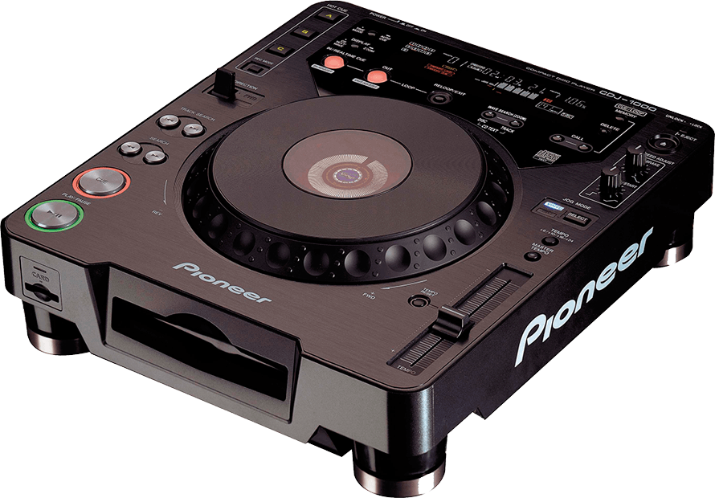
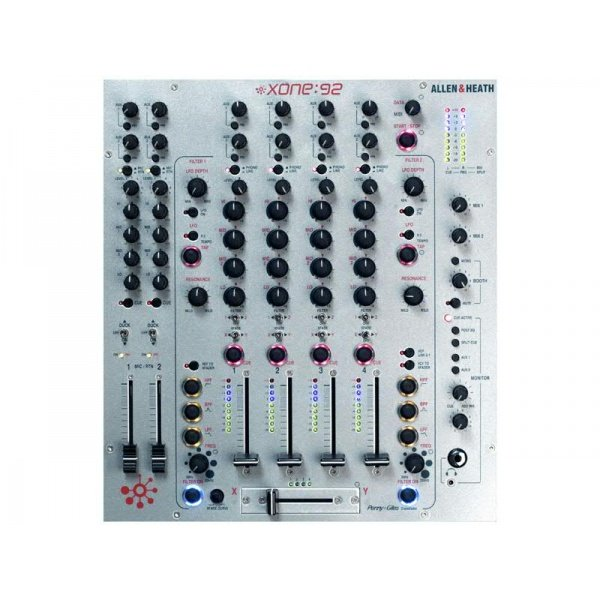
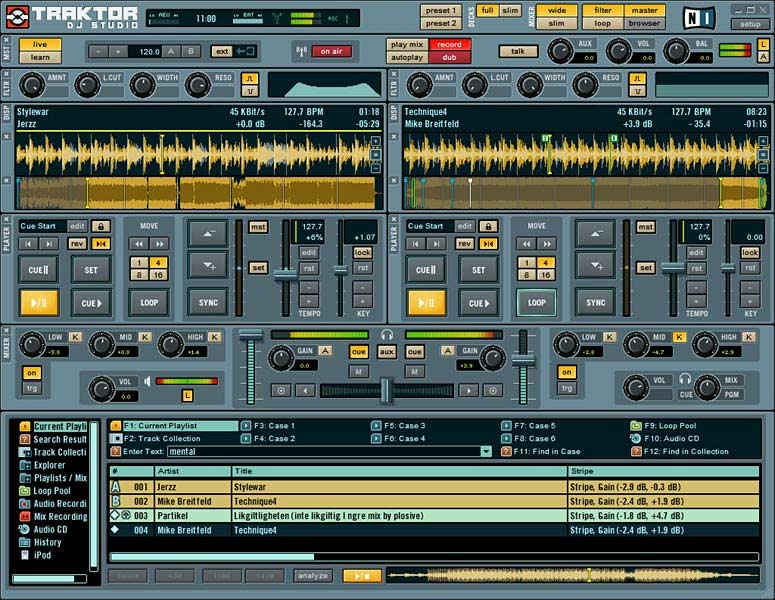
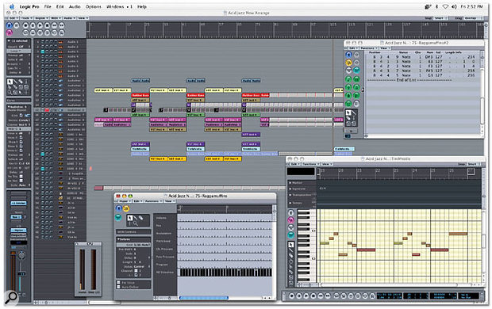

Perfecto Presents:
Sandra Collins
One album · Two CDs · One production project
Visual reference; session version unconfirmed.
Producers → AOL Instant Messenger
Direct screen-name contact brought new music and revisions into the studio quickly.
When a song needed changes, the producer could revise it and send it back.

CDJ-1000 · Original
Xone:92 · Silver Mk1Product photos: Pioneer DJ archive · ESP Music Rentals.
Burn to CD → Play on CDJ-1000s
Sandra explored the music through DJ performance, much as she had with vinyl.
Original Pioneer CDJ-1000 decks
↓
Allen & Heath Xone:92
Original silver Mk1 · Confirmed by Scott
Musical fit + Exclusivity
Choose songs for the album’s direction and flow, with access to unreleased music part of their appeal.

Historical screenshot: Amazona’s Traktor retrospective.
Match the working tempo
Synchronize the selected song to the tempo being used for the project and explore how it fits into the mix.
Traktor is shown here in its studio-preparation role. Sandra’s deck-based auditioning remains a separate part of the workflow.
WAV / AIFF → Tempo in filename → Logic 7
Print the prepared track from Traktor, label it with its tempo and import the audio file into Logic.

Logic Pro 7 interface shown: Sound On Sound. Exact edition and build unspecified.
Arrange · Remix · Rebuild
Work on the grid, reshape intros and outros, add loops and revise the musical passages between songs.
Listen → Rework → Listen again
New tracks could reopen earlier choices. Scott recalls three or four produced versions of CD 1.
Two continuous CD mixes
Multiple versions recalled during development.
Part of the same production project.
Scott + Sandra → The masters sent to the label
The label-delivered masters were the only reference they reviewed together.
Masters → Hard drive → Label
Both finished mixes were delivered on a hard drive.
Scott recalls that their contractual responsibilities ended when the masters left their hands.
Mastered by another studio
Scott identifies an outside studio as responsible for the compilation’s final mastering.
Studio credit to be verified from the release packaging.